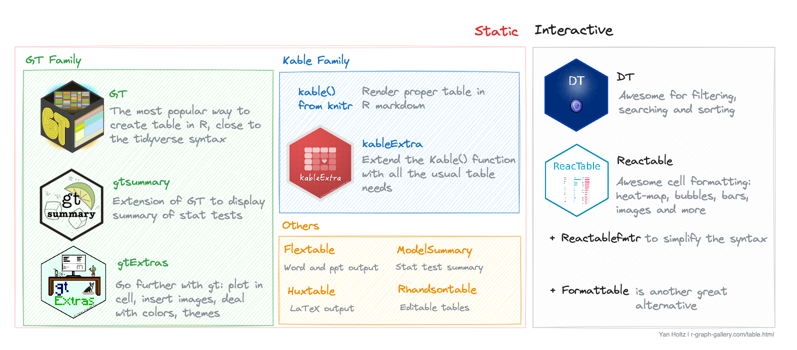

How to make a table with R
Tables are powerful but complicated figures. As a result, there is a myriad of packages allowing to build them with R. It is easy to get lost!
I've tried to summarize the main packages in the following diagram:
The following document is organized following those 4 big families. For each package, I tried to explain when to use it and provided a few example with code to get started quickly.
1️⃣ GT, gtsummary and gtExtras
→ GT: Customizable, user-friendly R table
The GT package, stands for "Grammar of Tables". It was created by the RStudio team and first released in 2018. It offers an intuitive, tidyverse-inspired syntax, making table creation accessible, including for beginners.
GT's user-friendly design for handling complex formatting
has quickly gained popularity in the R community. Its ease of use and
readability make it a go-to choice for many R users seeking to create
clear and aesthetically pleasing tables.

→ gtsummary: summary statistics tables
gtSummary
is a companion package to gt, specifically designed to
enhance gt's capabilities in
summarizing statistical findings. It bridges the gap between
data analysis and table creation, allowing users to seamlessly
generate summary tables directly from their analytical outputs.
By integrating with gt, gtSummary simplifies
the process of transforming statistical results into well-organized
and clear tables, ideal for reports or presentations.
→ gtExtras: more styling for gt
gtExtras augments and expands the functionalities of the
gt package. It allows to create even more sophisticated
and visually appealing tables.
It comes with a set of themes to make your table good-looking with just one more line of code. It provides functions to easily add plots in table cells. It also has helper functions to help with colors and icons.

2️⃣ kable and kableExtra for R Markdown
documents
→ kable(): the table function of knitr
The knitr package is mainly made to render R Markdown
documents. But it also has a kable() function that offers
a simple and efficient way to create tables in R markdown documents.
kable() allows for quick conversion of data frames into
tables.
→ kableExtra(): extending kable()
On the other hand,
kableExtra
serves as an extension to kable, significantly enhancing
its capabilities. With kableExtra, users gain access to a
wide range of styling and formatting options, such as adding stripes
to rows, formatting text and cells, and even creating complex table
layouts.
3️⃣ Interactive tables with DT, reactable or
formattable.
→ DT: easy filtering & sorting
DT stands
for "DataTables", the Javascript library it interacts with.
DT stands out for its ability to handle large datasets
efficiently and its rich array of features like searching,
sorting, and pagination.
I love adding a DT table at the beginning of my data analysis Quarto report. It provides access to your raw data easily!
Please check my full introduction to DT for more! Oh and this is how a DT table looks like:
And a couple of additional examples to learn how to customize
DT tables:
→ reactable: unlimited cell customization
reactable allows to create interactive tables with extensive cell formatting capabilities.
It simplifies the process of embedding images within cells, it allows to create heat map-like tables through its advanced cell coloring features. Additionally, it offers unique functionalities for integrating bars or bubbles, further enhancing the visual appeal and informative value of the tables.
Reactable is also exceptionally effective for designing
tables with expandable rows, making it an ideal choice for
aggregating and presenting complex data sets in a user-friendly
manner.
Reactable can create some pretty amazing tables. Check this work by szymanskir for the R Studio table contest! Note: you can scroll, images are links, and the line chart is interactive.
→ formattable
formattable is another great alternative when it comes to
build interactive tables with R. Check its
github repository
for examples.
4️⃣ Other useful libraries.
→ flextable: best option for non-html output
flextable is another solid option to create very polish static tables. It supports a wide range of formatting options, including merging cells, rotating text, and conditional formatting.
It stands out due to its compatibility with various R Markdown formats, including Word, PowerPoint, and HTML.
→ rhandsontable: to manually edit cells
Rhandsontable provides an interactive table interface, allowing for direct editing of tables within a Shiny app or R Markdown document. It differentiates itself with features like dropdown menus, checkboxes, and calendar aids for data entry, emphasizing interactivity and user input.
It is best suited for applications requiring interactive data editing and manipulation within a web interface, such as Shiny applications.
→ modelsummary: for statistical model results
modelsummary is specialized for summarizing statistical models in R, offering a straightforward way to create elegant and comprehensive tables of model results.
It supports over one hundred types of models out-of-the-box, and allows users to report the results of those models side-by-side in a table, or in coefficient plots.
→ huxtable: for LaTeX output
huxtable focuses on creating simple yet elegant tables in R, with a strong emphasis on cross-format compatibility for LaTeX, HTML, and Word.
It is particularly appreciated by people in need for LaTeX outputs.